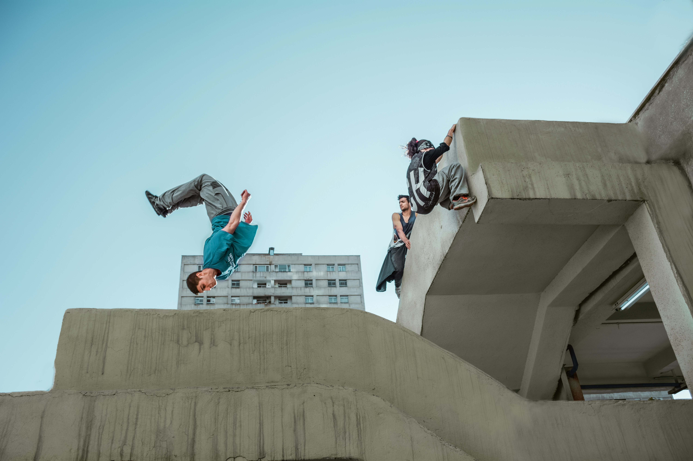

Here are some example images. Some optimised, some not. Some at different
resolutions too!
Here's an unoptimised image at full resolution:

Here's a more optimised image using the webp format which has a smaller
file size
Finally, here is a very well optimised image which has been converted to
webp, and also reduced in resolution to match our web page